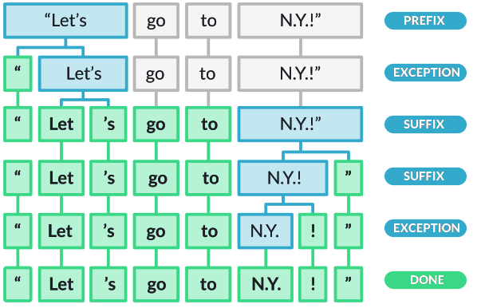

Syntax
John P. McCrae - University of Galway
Course at ESSLLI 2023
Corpus Selection and Construction
Types, tokens and morphology
Types and tokens
- Tokens refer to the individual words in the text
- Types are the distinct words we see in the text
I know that this is simple
6 Tokens, 5 Types
Tokenization
Source: https://spacy.io/usage/spacy-101Non-linguistic tokens
- Hashtags/mentions (#amazing, @john)
- URLs
- Emoticons (:-O, 😀)
Compounds
- bookshelves, bedroom, policeman
- Flachbildschirmfernseher (German: flat screen TV)
- bestuurdersaansprakelijkheidsverzekering (Dutch: drivers' liability insurance)
Aside: What is a word?
- Occurs between spaces (and punctuation)
- Can be a single utterance
- Has a distinct meaning
- Syntactically free
- Has an inflectional paradigm (e.g., plural, past tense, genitive case)
- (Useful as a) headword in a dictionary
Subword tokenization
Maybe a human definition of word is not the best?
Super ##cali ##frag ##il ##istic ##ex ##pi ##ali ##do ##cious
WordPiece (Wu et al., 2016)
- Initially use only characters as words
- Build a probability model on the corpus
- Merge two most probable words
- Repeat until limit of words is reached of likelihood is below a threshold
Morphology
- Lemmatization: Reduce words to their base form
- Stemming: Reduce words to their stem
Morphology Examples
| Word | Lemma | Stem |
|---|
| cars | car | car |
|---|
| caring | care | car |
|---|
| taught | teach | taught (!?) |
|---|
Stemming is not linguistically motivated
Inflection and Derivation
Inflection captures the lemma and the change that has hap[pened to it
writing = write + PRESENT + PROGRESSIVE
Derivation is how new words are formed
agreement = agree + MENT
Example: English Genitive
Example: 1st and 2nd person pronouns
Example: Placement of adverbs
Example: Diachronic change